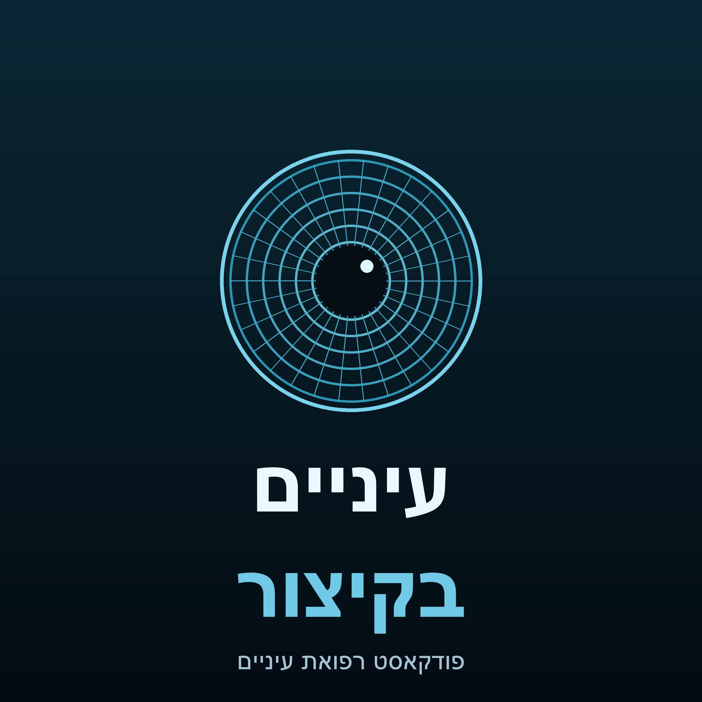

פודקאסט עברי לרופאי עיניים ואנשי מקצוע — סקירות עומק קליניות בפורמט שיחה בין שני מומחים.
תוכן חינוכי בלבד, שהופק בעזרת בינה מלאכותית, ואינו מהווה ייעוץ רפואי.
פיד פרטי. ניתן להוסיף ביישומון פודקאסטים דרך כתובת ה-RSS.